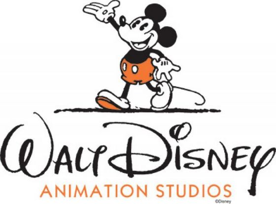
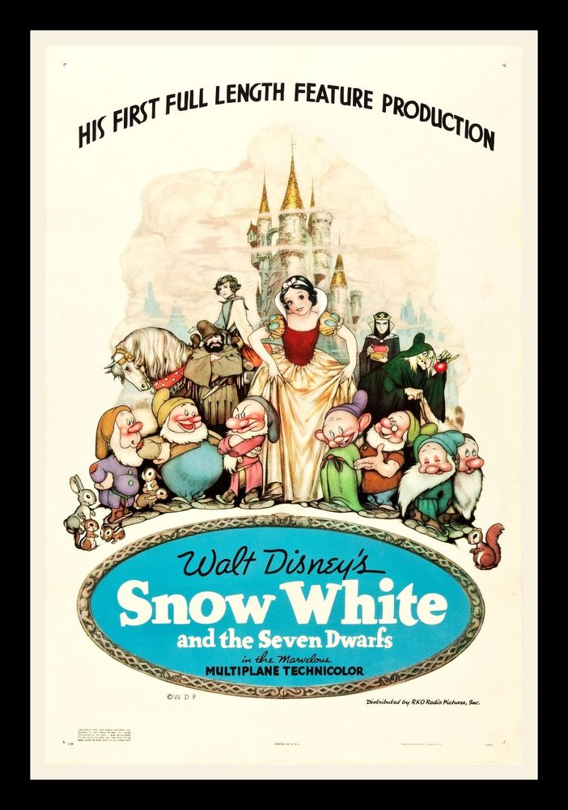

Op 16 oktober 1923 hebben de broers Walt en Roy Oliver Disney de Disney Brothers Cartoon Studio opgericht. Het bedrijf hield zich bezig met het maken van korte tekenfilms. De eerste echt grote hit scoorde ze in 1928 met Mickey Mouse in Steamboat Willy.
Na Mickey Mouse heeft Disney een serie van 75 tekenfilms tekenfilms gemaakt met de naam Silly symphonies. Hierin verschenen figuren als Donald Duck en de drie biggetjes voor het eerst.
Disney heeft ook de eerste lange tekenfilm uigebracht, dit was in 1937 met de succesvolle film Snowwhite and The Seven Dwarfs. Aan deze film is wel twee jaar lang gewerkt. Voor deze film heeft Disney een oscar gekregen met zeven kleine oscars die de zeven dwergen moesten voorstellen.